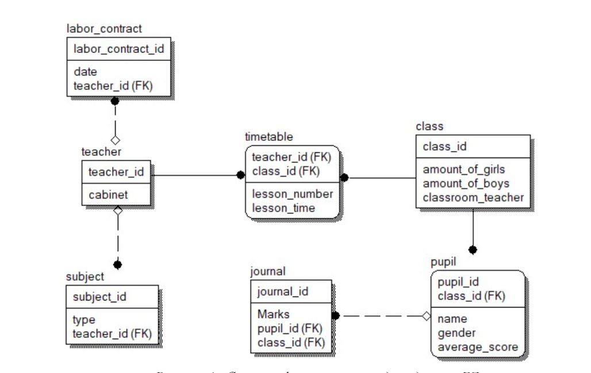

Описание системы
Создать программную систему, предназначенную для завуча школы. Она должна обеспечивать хранение сведений о каждом учителе, классном руководстве, о предметах, которые он преподает в заданный период, номере закрепленного за ним кабинета, о расписании занятий. Существуют учителя, которые не имеют собственного кабинета. Об учениках должны храниться следующие сведения: фамилия и имя, в каком классе учится, какую оценку имеет в текущей четверти по каждому предмету.
Завуч должен иметь возможность добавить сведения о новом учителе или ученике, внести в базу данных четвертные оценки учеников каждого класса по каждому предмету, удалить данные об уволившемся учителе и отчисленном из школы ученике, внести изменения в данные об учителях и учениках, в том числе поменять оценку ученика по тому или иному предмету. В задачу завуча входит также составление расписания.
Скриншот из модели данных
